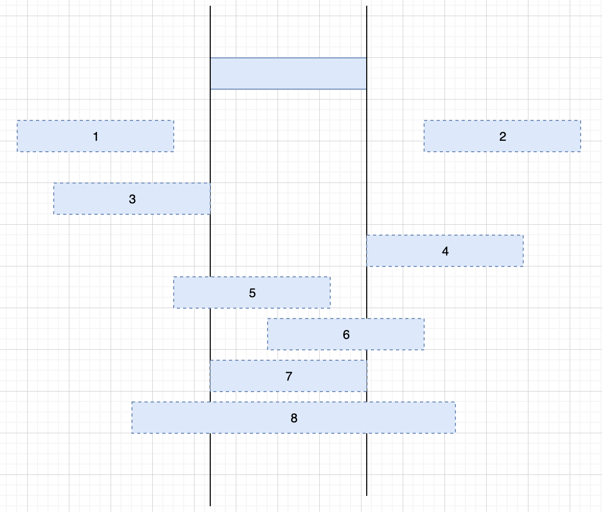

《日程安排》专题
《我的日程安排表》截止目前（2020-02-03）在 LeetCode 上一共有三道题，其中两个中等难度，一个困难难度,分别是：
另外 LeetCode 上有一个类似的系列《会议室》，截止目前（2020-02-03）有两道题目。其中一个简单一个中等，分别是：
今天我们就来攻克它们。
729. 我的日程安排表 I
题目地址
https://leetcode-cn.com/problems/my-calendar-i
题目描述
实现一个 MyCalendar 类来存放你的日程安排。如果要添加的时间内没有其他安排，则可以存储这个新的日程安排。
MyCalendar 有一个 book(int start, int end)方法。它意味着在 start 到 end 时间内增加一个日程安排，注意，这里的时间是半开区间，即 [start, end), 实数 x 的范围为， start <= x < end。
当两个日程安排有一些时间上的交叉时（例如两个日程安排都在同一时间内），就会产生重复预订。
每次调用 MyCalendar.book 方法时，如果可以将日程安排成功添加到日历中而不会导致重复预订，返回 true。否则，返回 false 并且不要将该日程安排添加到日历中。
请按照以下步骤调用 MyCalendar 类: MyCalendar cal = new MyCalendar(); MyCalendar.book(start, end)
示例 1:
MyCalendar(); MyCalendar.book(10, 20); // returns true MyCalendar.book(15, 25); // returns false MyCalendar.book(20, 30); // returns true 解释: 第一个日程安排可以添加到日历中. 第二个日程安排不能添加到日历中，因为时间 15 已经被第一个日程安排预定了。 第三个日程安排可以添加到日历中，因为第一个日程安排并不包含时间 20 。 说明:
每个测试用例，调用 MyCalendar.book 函数最多不超过 100 次。 调用函数 MyCalendar.book(start, end)时， start 和 end 的取值范围为 [0, 10^9]。
暴力法
思路
首先我们考虑暴力法。每插入一个元素我们都判断其是否和已有的所有课程重叠。
我们定一个函数intersected(calendar, calendars)，其中 calendar 是即将要插入的课程，calendars 是已经插入的课程。 只要 calendar 和 calendars 中的任何一个课程有交叉，我们就返回 True，否则返回 False。
对于两个 calendar，我们的判断逻辑都是一样的。假设连个 calendar 分别是[s1, e1]和[s2, e2]。那么如果s1 >= e2 or s2 <= e1, 则两个课程没有交叉，可以预定，否则不可以。如图，1，2，3 可以预定，剩下的不可以。

代码是这样的：
<pre class="calibre18">```
<span class="hljs-function"><span class="hljs-keyword">def</span> <span class="hljs-title">intersected</span><span class="hljs-params">(calendar, calendars)</span>:</span>
<span class="hljs-keyword">for</span> [start, end] <span class="hljs-keyword">in</span> calendars:
<span class="hljs-keyword">if</span> calendar[<span class="hljs-params">0</span>] >= end <span class="hljs-keyword">or</span> calendar[<span class="hljs-params">1</span>] <= start:
<span class="hljs-keyword">continue</span>
<span class="hljs-keyword">else</span>:
<span class="hljs-keyword">return</span> <span class="hljs-keyword">True</span>
<span class="hljs-keyword">return</span> <span class="hljs-keyword">False</span>
复杂度分析：
- 时间复杂度：O(N2)O(N^2)O(N2)。N 指的是日常安排的数量，对于每个新的日常安排，我们检查新的日常安排是否发生冲突来决定是否可以预订新的日常安排。
- 空间复杂度: O(N)O(N)O(N)。
这个代码写出来之后整体代码就呼之欲出了，全部代码见下方代码部分。
### 代码
代码支持 Python3:
Python3 Code: